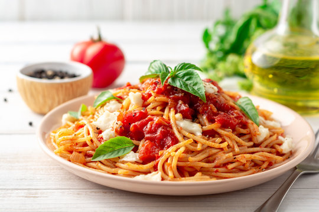

Pasta Sauce
Home

This easy pasta sauce is super quick to prep and cook. Serve hot with any cooked pasta shape.
Ingredients
- 2 tablespoons olive oil
- 3 cloves garlic
- 1 can crushed tomatoes
- 1 teaspoon dried basil
- salt and pepper to taste
Steps
- Gather the ingredients
- Heat oil in a large skillet over low heat; add garlic and sauté until tender, about 2 minutes.
- Stir in crushed tomatoes, basil, salt, and pepper. Simmer, stirring occasionally, until slightly thickened, 15 to 20 minutes. Serve immediately.
Bloomin' Potato
Milkshake